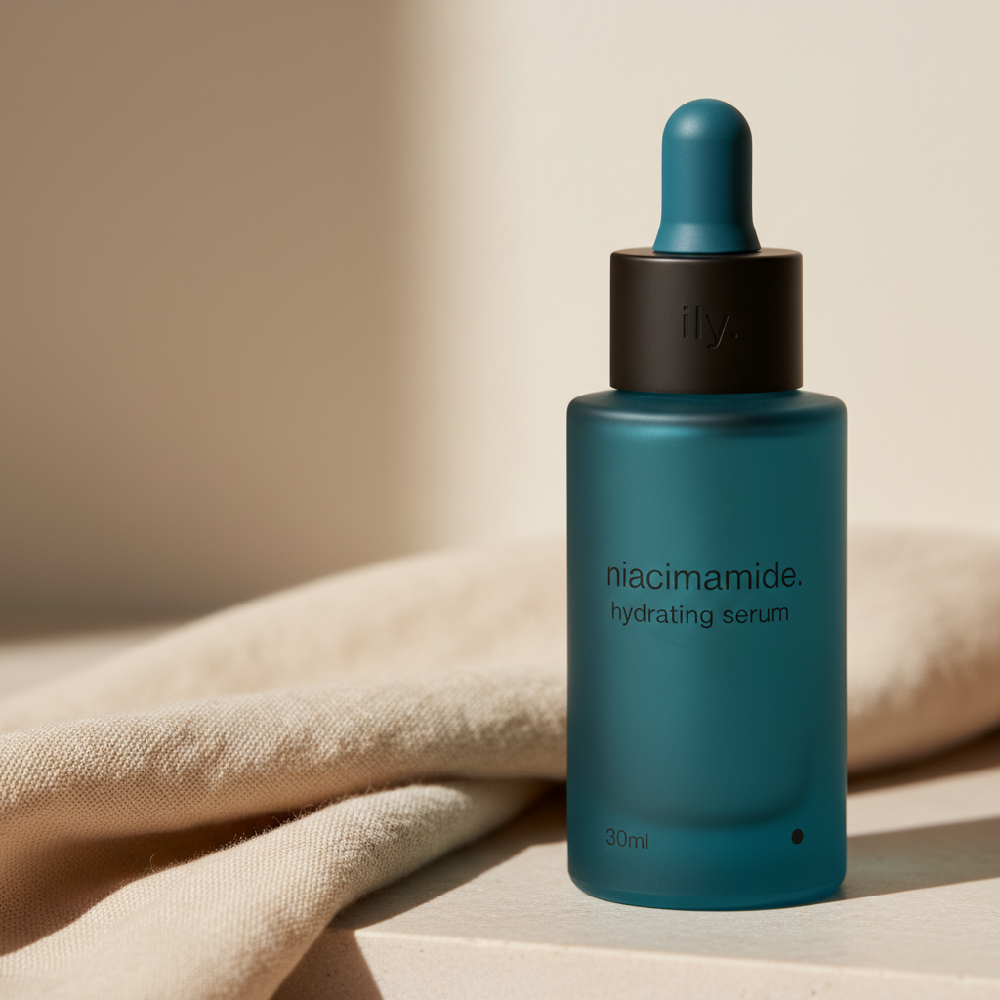
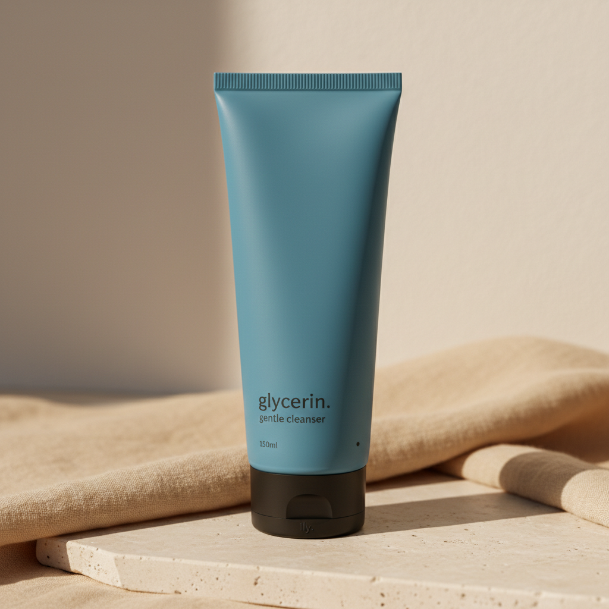
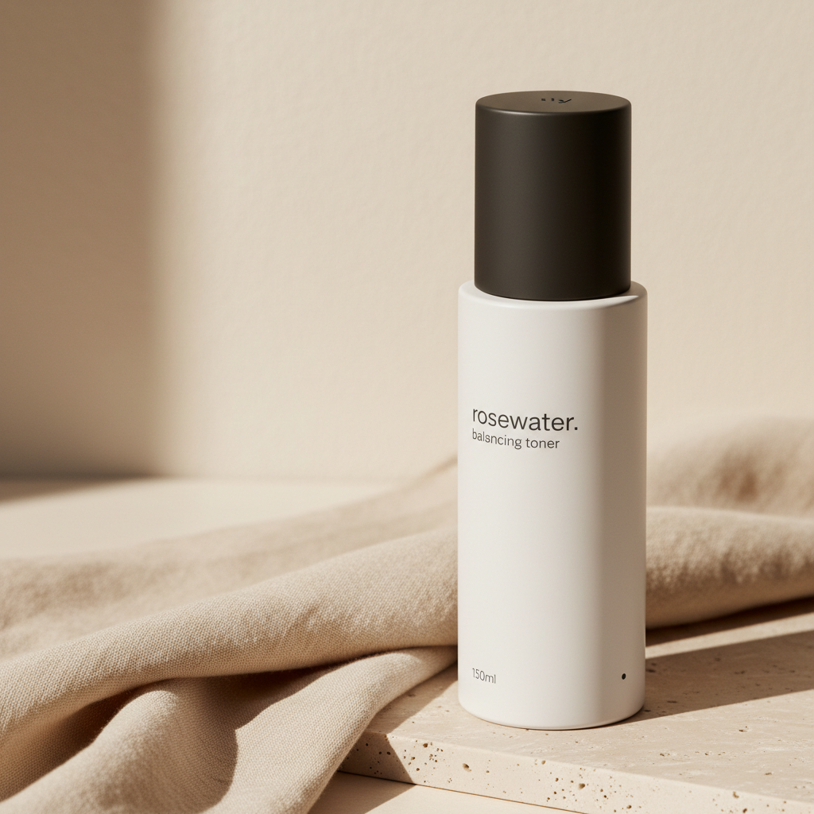
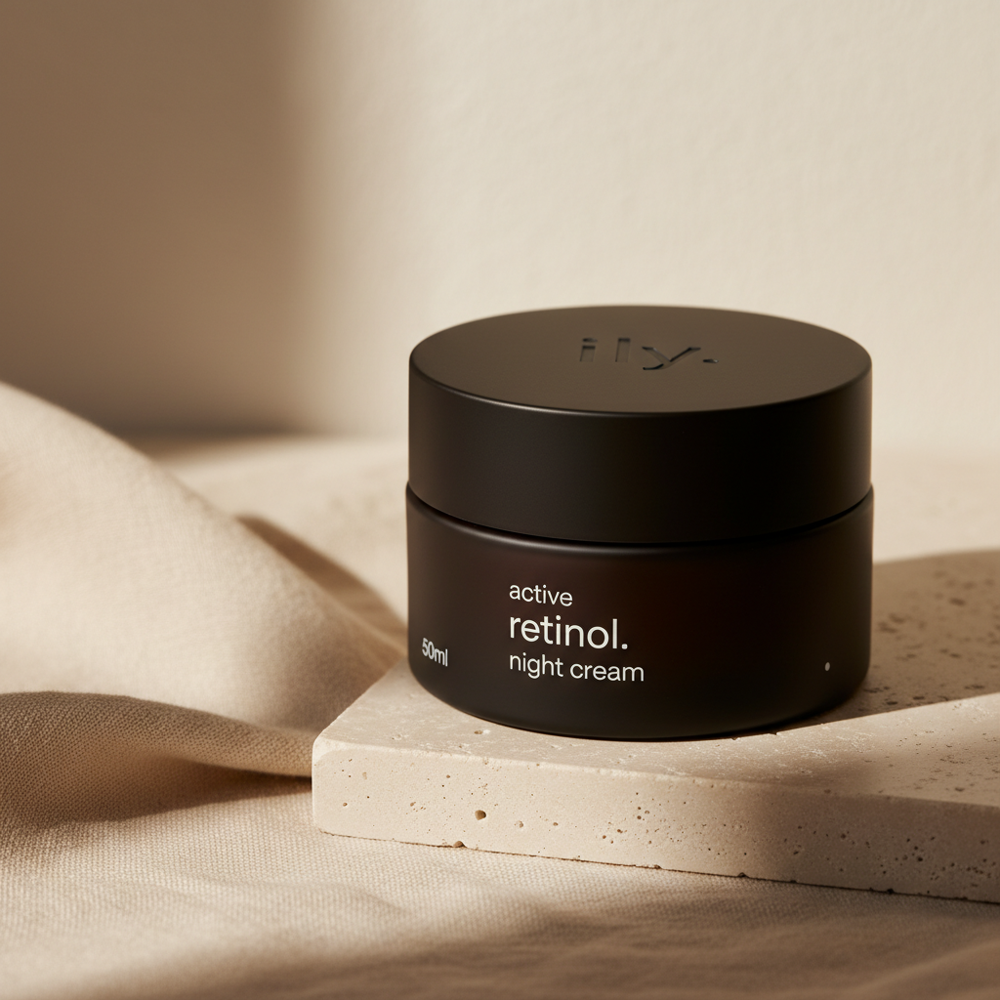
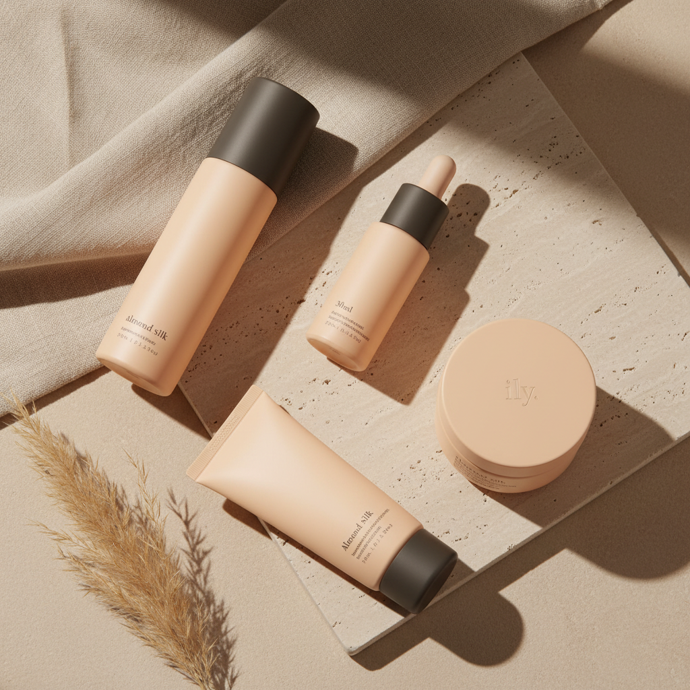

packaging mockups · v2 · 2026-05-02
five SKUs, audit-informed.
a second pass on the lead packaging mockups, designed against the recommendations in the 2026-05-01 standards audit. every SKU now applies the resolved positions from §3 (deeper packaging-only frosted blue, ingredient-led hero, period anchor, restrained type sizing) and the prestige-tier conventions from §1.
01 · hero serum
30ml frosted dropper · hydration tier.

the SKU the audit specifically called out — exercises every cohesion rule. tested against the v1 mockup with the changes from §3.2 (deeper packaging-only frosted blue), §3.1 (restrained 16pt-equivalent ingredient hero), and §3.4 (period anchor sized as a true 1.5mm period in the bottom-right).
principles applied
- front type = ingredient, not brand. rule 4 — the v1 had
iloveyouth.at hero size; v2 leads withniacinamide. - deeper packaging-only frosted blue at
~#6FB8DC(§3.2). reads as a confident muted-saturated tone instead of a pale pastel. - shadow grey collar across the dropper line — the system's strongest cohesion lever.
ily.emboss on dropper bulb (rule 3). uninked, raking-light dependent.- period anchor in the bottom-right of the front face (rule 5).
- ~70% negative space on the front face (§1 negative space rule).
iloveyouth. wordmark from front, replaced "hero serum / 30ml" stacked centered with proper hierarchy (ingredient hero → tracked product type → corner-anchored volume), shifted body color from #ADE8F9 to packaging-blue ~#6FB8DC.

02 · gentle cleanser
150ml matte squeeze tube · hydration tier.

same packaging-blue body as the serum, executed on the matte PE squeeze tube format. the $0.05 matt tube finish is the brand's single highest price-to-perception lever (uapkg-capabilities §3.3) — held.
principles applied
- ingredient-led front —
glycerin.as hero,gentle cleanserat ~30% scale below (rule 4). - matte tube finish — kept (audit §1 finish semiotics). gloss reads cheap on this format.
- shadow grey screw cap with the tiny
ily.deboss on the flat bottom (rule 3, dropper-collar logic extended to caps). - period anchor bottom-right.
- defined wrap point for the front-to-side seam — carries through the dieline review (audit §5 caveat).
iloveyouth. wordmark, replaced with glycerin. ingredient hero. corrected oversized brand vs. tiny product-type imbalance.
03 · balancing toner
150ml ghost white pump bottle · cleansers & gentle daytime tier.

the cohesion star here is the matte shadow grey pump dust cover — the cheapest highest-leverage cross-line element in the system (audit §1 shelf-blocking principle, §5 per-format ✅). every pump SKU on the line wears the same dust cover; the catalog photography ties together by that single constant.
principles applied
- ingredient-led front —
rosewater.as hero,balancing tonersubordinate. - shadow grey pump dust cover — the system constant. unmistakable in catalog photography.
- matte ghost white body finish (slightly warm-tinted off-white, distinctly not pure white per brand-identity locked rule).
- period anchor bottom-right.
- ~70% empty front face.
iloveyouth. wordmark and the centered balancing toner / 150ml stack. moved volume to a tiny corner anchor. ingredient now leads.
04 · retinol night cream
50g shadow grey jar · actives & night tier.

the actives tier is where the audit specifically allowed for an "active" eyebrow — the one place a tracked-out small caps tier-coding label earns its place (§5, per-format airless ✅; extended here to the actives jar). type ink is ghost white on the dark body for contrast.
principles applied
- shadow grey body for the actives/night tier (rule 1 function code).
- tracked-out 'active' eyebrow at ~6pt — the canonical 5-tier hierarchy's tier 1 (§1 information hierarchy).
- ingredient hero —
retinol.in light weight ghost white silkscreen. - matched matte lid with engraved
ily.mark (rule 3). - period anchor bottom-right.
- aesthetic anchor: augustinus bader's "the cream" — the closest comparable on the category map.
05 · the regimen
4-piece almond silk gift set · limited / gifting tier.

almond silk is the brand's reserved warmth color — restricted by rule to limited drops, gifting, and sets. the audit (§5 per-format set ✅) flagged this as exactly the discipline that keeps almond silk from flooding the line. the 10:1 frosted-blue-to-almond-silk ratio from brand-identity is preserved by making this the rare warmth moment.
principles applied
- almond silk surface only — never on the standard-tier line. the warmth grace note.
- same restraint, same hierarchy across all four format formats — the typographic grid carries siblings at very different canvas sizes (§1 cross-format cohesion lever 1).
- shadow grey constants preserved — dust cover on the pump, collar on the dropper, cap on the tube. matched almond silk lid on the jar (the gift-set jar exception).
- family signature — every cap carries the engraved
ily.mark.